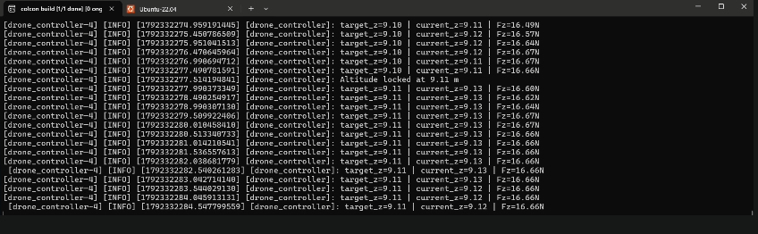

Robotics · Simulation · Oct 2026 – Present
Quadrotor Drone Simulation
Simulating a quadrotor drone from scratch in ROS 2 Humble and Gazebo Classic.
Watch the demo on LinkedIn ↗

Overview
Project Overview
An ongoing project to simulate a quadrotor drone from scratch using ROS 2 Humble and Gazebo Classic.
The work is under active development, so this page will grow as the simulation matures.
Tech Stack
Technologies Used
ROS 2 Humble
Gazebo Classic
Robot Operating System
Simulation
Components
Key Components & Features
ROS 2 Humble
Robot middleware used to structure the drone's nodes, topics and control flow.
Gazebo Classic
Physics simulator used to model the quadrotor and its environment.
Learnings
Key Learnings & Development
- Building a quadrotor model and simulation environment from scratch rather than from a ready-made package
- Working with the ROS 2 Humble and Gazebo Classic toolchain